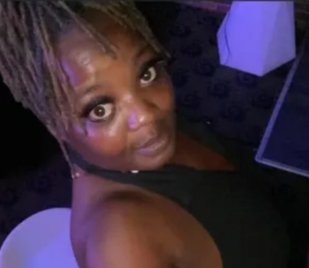

Timeline photos
Veronica Bell was shot and killed on Eighth Street Southwest on August 16 2023 - she was found laying on the ground outside a house with multiple gunshot wounds.
As I do my memorial today of people who have been murdered in Akron I'd like you to be aware of how many of these people are Black. 30% of our population is Black. So only 3 out of 10 of these murder victims should be Black. But instead, the vast majority of them are Black.
This is what I'm talking about when I'm talking about Racism. I just don't have another word to describe it. So often racism is not a White guy wearing a pillowcase for a hat yelling racist slurs. Racism is an entire society where, in this case, Black people are unequally being pushed down and hurt. It's an entire ecosystem that makes life much more difficult for one race than another. And the only difference is the color of their skin.
The unequal murder of Black people isn't because you are worried you think silly thoughts like Black people liking watermelon or chicken or menthol cigarettes or even thinking they have poor family values. The unequal murder of Black people is happening because being a poor Black person in an American city means you have no hope, no dreams, no possible path out of the hell that is inner city America.